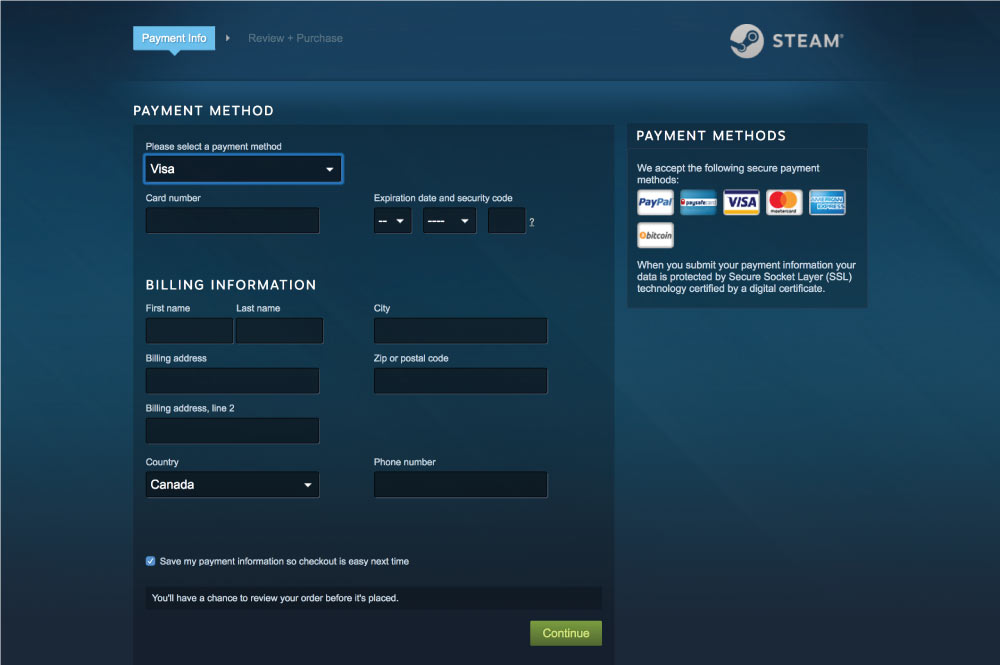

School project in groups of two, to create a company website with a transaction process.
The website needs to be responsive on all types of screen sizes and needs to have accessibility.
My partner and I chose to do a catering company that specializes in desserts.
view full websiteJoanathan Chau, Mandy Cheung
The website's site map was done as a pair. We split up the pages to code amongst ourselves. I did the order, menu and homepage. I did the branding of 7Trades.
Together, my partner and I made a sitemap that includes all the pages and content that would go into each page.
When we weren’t too entirely sure on what a catering website should have we researched into existing websites and see what pages they have and see if it’s applicable to our company.
Future Improvement
Specific templates for each page would be more efficient in coding the website
7Trades Site Map
The brand colours chosen for 7Trades is meant to give off a high class or luxury feeling.
The font and other styled elements was inspired from modern coffee shops and their websites.
We invisioned the website to beclean and vibrant. Thus, the photos in the website has to be bright, colourful and vibrant.
Snippet of 7 Trades Style Guide
Snippet of 7 Trades Style Guide
There were a lot of unsure elements in the first iteration. For example, the placement of the navigation bar. The text over faded images were also in question, as it was hard to read.
First iteration of Order Page
At school, our website was critiqued and tested . For example it was test for: responsiveness, load time, functionality without Javascript, and feeling of security for the user.
Feedback on our website was relatively positive, but there was a few critique and we took to improve on our website.
What I learned
I learned more from looking at other classmates’ websites than the feedback my partner and I got from our classmates. We used other classmates’ websites as inspiration to improve on our own.
What the order page looks like going into the critique
From the critique, I felt that our order forms was lacking legitimacy to make the potential users felt safe buying our product. I implemented a process bar to show progress in the order form.
But the form was still lacking. I tried discussing with my partner to try to figure out what was missing.
Progress bar implementation
I went through a purchase process on STEAM, a online platform that sells games. I screenshot and analyzed what made me feel “safe” or what made the purchase process feel legitimate.
I noticed that the form is restricted to a certain sizeand there were fine print throughout the form to inform the user in case they felt insecure about something. They specifically let the user know when they were purchasing.
Steam's Cart
Steam's Payment Page
For 7Trades’ order forms, I put in margins so the form was a set size, and it instantly made the forms look more legitimate.
The transaction forms still have ways to go to be considered "legitimate".
Last iteration of order page
I learned from this experience that I should look at exisiting examples for reference and see what the standardsare. It is important to make potential customers feel safe on the website, otherwise they will not make any purchases let alone get to the transaction process.
Further changes I would implement to this website is more fineprint throughout the order forms to create a safer environment for potential customers.
Finished homepage of 7Trades